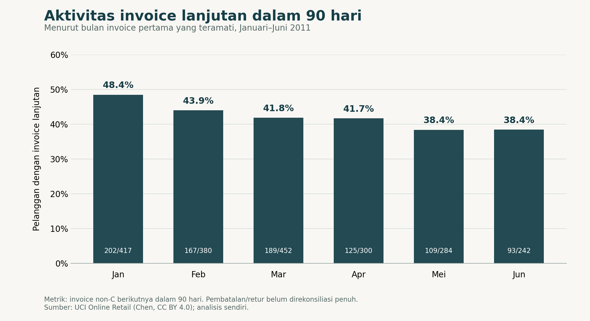

Case file 03Analisis data · 2026
Studi kasus publik
Analisis transaksi
Online Retail
Saya memeriksa 541.909 baris transaksi untuk mencari tahu berapa banyak pelanggan yang punya invoice lain dalam 90 hari setelah invoice pertama yang terlihat di data.
42,7%
885 dari 2.075 pelanggan pada kohort Januari–Juni 2011 memiliki invoice non-pembatalan berikutnya dalam 90 hari.
- Proses
- Saya memeriksa data kosong, pembatalan, nilai nonpositif, dan baris identik sebelum membentuk kohort dengan SQL.
- Temuan
- Proporsi invoice lanjutan berbeda menurut bulan dan kelompok nilai invoice pertama.
- Batasan
- Ini mengukur aktivitas invoice, bukan retensi pembelian bersih. Pembatalan dan retur belum sepenuhnya dipasangkan dengan invoice asal.


12